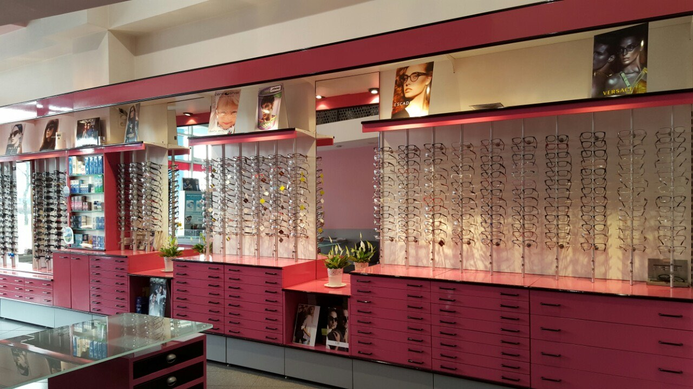
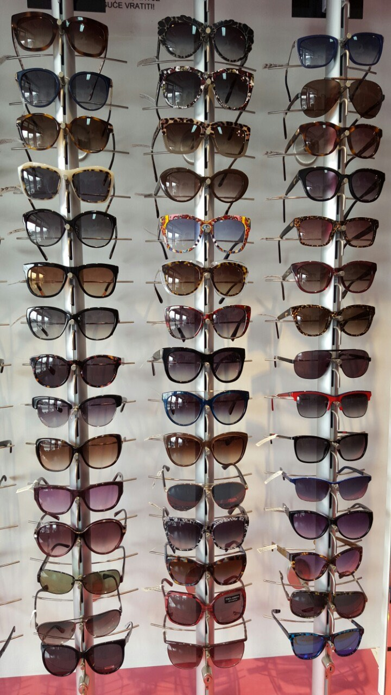

Od izrade dioptrijskih naočala i odabira okvira do kontaktnih leća, otopina i slušnih pomagala. Sve što nudimo, na jednom mjestu.
Medicinski proizvod, rađen za vas.
Dioptrijske naočale su medicinski proizvod, posve individualan i personaliziran: okvir i naočalne leće za korekciju ili zaštitu očiju. Izrađujemo naočale svih namjena.
- diskretne i lagane, moderne i elegantne naočale
- fotoosjetljive naočale sa 100 % UVA i UVB zaštitom
- naočale za vozače i noćnu vožnju
- sunčane dioptrijske naočale, i sa zakrivljenim okvirima
- dioptrijske naočale s polarizacijom, za vid bez blještanja
- progresivne naočale za sve udaljenosti
- potpuno personalizirane naočale uz EyeCode tehnologiju

Koji okvir pristaje vašem licu?
Tri osnovna pravila: naočale ističu najbolje crte lica, između oblika okvira i lica treba postići kontrast, a veličina okvira prati veličinu lica. Zadnja riječ je ipak uvijek vaša.
Četvrtasto lice
Preporučuju se okrugli i zaobljeni okviri ili uski ovalni oblici. Takvi okviri produljuju lice i ublažavaju njegove oštre rubove.
Okruglo lice
Izbjegavajte okrugle i prevelike okvire. Bolje pristaju izduljeni, četverokutni ili višekutni oblici, a pravokutni uski okviri s jasno istaknutim mostićem sužavaju i produljuju lice te „proširuju” oči.
Ovalno lice
„Najzahvalniji” oblik: pristaju gotovo svi okviri. Za prirodnu ravnotežu odaberite široke okvire ili okvire šire od najširega dijela lica, jednostavne ili maštovite, po vašem ukusu.
Trokutasto lice
Osobe s naglašenim jagodicama i trokutastim oblikom lica biraju veće okvire uzdignutih krajeva sa širokim krilcima.
Duguljasto lice
Traži veće okulare i deblji gornji rub okvira koji prati crtu obrva. Lice možete uravnotežiti i „skratiti” okvirima koji su dublji nego što su širi.
Dijamantno lice
Vrlo rijedak oblik: visoke i široke jagodice koje se sužavaju prema čeljusti i očima. Pristaju okviri od ovalnih i „mačkastih” do naočala bez okvira (rimless) i okvira bez donjega ruba (niler).
Veličina okvira
Za sitnija lica ne prevelike okvire, tankih crta i svjetlijih boja. Na krupnijim licima premali okviri ne stoje lijepo i smanjuju vidno polje.
Pripasivanje
Okvir prilagođavamo anatomiji glave, nosa, sljepoočne kosti i uha. Zjenica treba biti u središtu okulara ili malo ispod.
Udobnost
Krilca ne smiju pritiskati sljepoočnicu ni korijen uha. Pritisak treba biti umjeren, da naočale stoje stabilno kad okrenete glavu.
Prirodan vid, bez okvira.
Kontaktne leće stoje izravno na oku i daju oštar vid u cijelom vidnom polju. Ne zamagljuju se pri promjeni temperature, na njih ne padaju kapi kiše i ne spadaju s nosa, pa su pogodne za sport i vožnju.
| Podjela | Vrste |
|---|---|
| Po materijalu | tvrde (PMMA), tvrde plinopropusne, meke (najmoderniji materijal je silikon hidrogel) |
| Po namjeni | korektivne, kozmetičke i terapeutske |
| Po korekciji | jednožarišne (za daljinu) te višežarišne, bifokalne i progresivne (za daljinu i blizinu) |
| Po trajanju | jednodnevne, dvotjedne, mjesečne i tromjesečne |
Prvi put s lećama? Uz pregled za leće dobivate poduku o stavljanju, nošenju i održavanju.
Otopine i kapi za zdrave oči.
Kutiju za leće nikad ne ispirite vodom, samo otopinom. Iskorištenu otopinu bacite i nikad je ne koristite ponovno.
Meke leće
Višenamjenske i peroksidne otopine.
Tvrde i plinopropusne
Otopine i deterdženti za svakodnevno čišćenje.
Kapi za oči
Za vlaženje i udobnije nošenje leća.
Zaštita od sunca, s potpisom.
Na našim policama izmjenjuju se najprestižnije marke visoke mode, uz klasične sunčane naočale s vrhunskom polarizirajućom optikom. Mnogi se modeli mogu pretvoriti u dioptrijske sunčane naočale.
Polarizirajuće leće izrađujemo po narudžbi u dioptrijskim jakostima, u sivoj i smeđoj boji, zatamnjene 75 posto.
| Boja leće | Kad je birati |
|---|---|
| Smeđa | najbolja za vozače: izoštrava kontraste, lakše se raspoznaju semafori i žmigavci |
| Siva i zelena | uz smeđu, najbolje boje za sunčane naočale |
| Svijetle leće | dobre u gradu; za plažu i vožnju birajte tamnije |

Nemojte čekati. Čujte ponovno.
Današnja slušna pomagala gotovo u potpunosti nadomještaju prirodan osjet sluha. U ponudi su Neurothova slušna pomagala, govorna pomagala i uređaji za pomoć kod disanja u snu (hrkanje, apneja).
Izrađujemo i održavamo dioptrijske naočale i slušne aparate te rezervne dijelove i preko HZZO-a.
Pitajte nas: 047 412 097| Stupanj | Gubitak (bolje uho, govorne frekvencije) |
|---|---|
| Uredan sluh | do 10 dB |
| Sluh u fiziološkim granicama | 11 – 26 dB |
| Lakša nagluhost | 27 – 40 dB |
| Umjerena nagluhost | 41 – 60 dB |
| Teška nagluhost | 61 – 80 dB |
| Praktična gluhoća | 81 – 93 dB |
Svratite na Tržnicu, pogledajmo zajedno.
Provjera vida je besplatna i bez čekanja. Pon – pet 8 – 13 i 16 – 20 h, subotom 8 – 13 h.